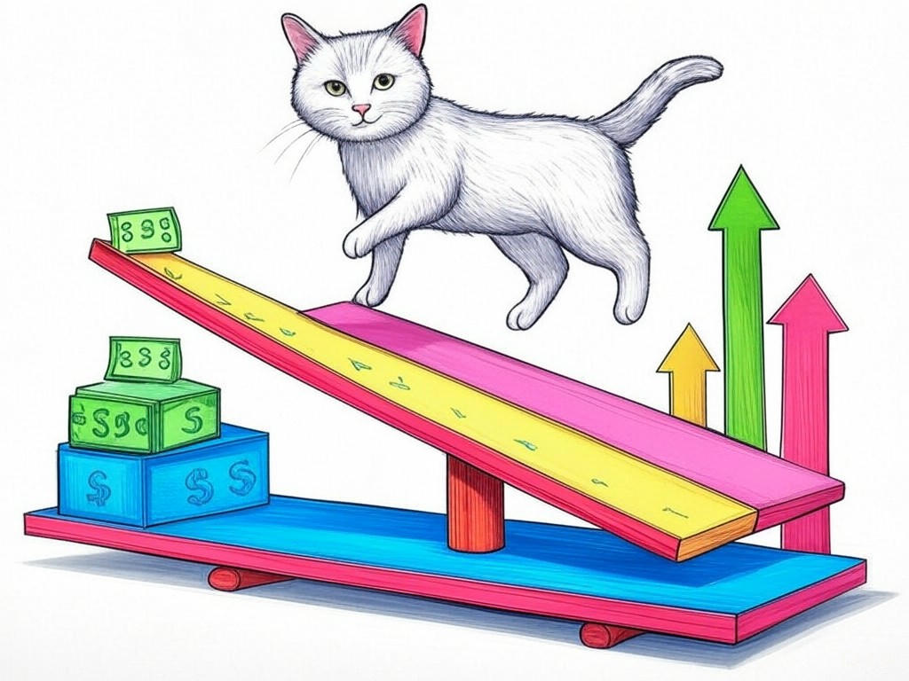
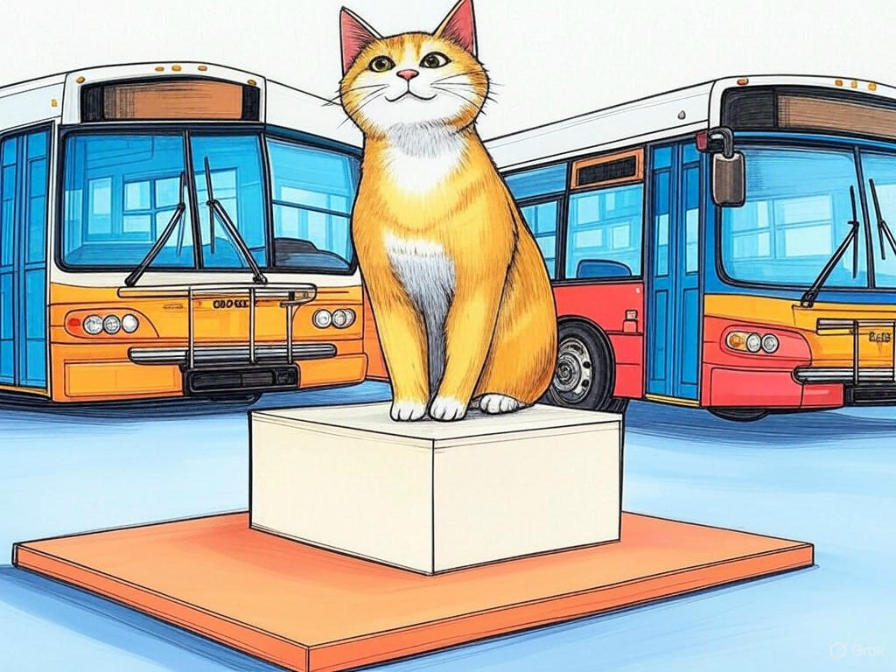

Transform Your Online Presence with Top-Rated Responsive Website Designers Near Louisville, Kentucky

Table of Contents
- Introduction: Understanding Your Specific Challenges
- How Can Top-Rated Designers Solve Your Performance Issues?
- What Are the Costs and Expected ROI of Professional Web Design?
- Leveraging Modern Web Design for SEO and Digital Marketing: A Step-by-Step Guide
- Case Studies: Louisville Businesses Thriving with Responsive Design
- How to Ensure Your Website Reflects Louisville's Unique Charm
- Overcoming Common Objections to Investing in Web Design
- Frequently Asked Questions About Responsive Web Design in Louisville
- Conclusion: Your Implementation Plan and Next Steps
Introduction: Understanding Your Specific Challenges

We know you're facing unique challenges in today's digital landscape, especially when it comes to finding the right top-rated responsive website designers near Louisville, Kentucky. You're not alone in this journey; many businesses in the area are looking to enhance their online presence to stand out in a competitive market. Top-rated responsive website designers near Louisville, Kentucky specialize in creating websites that adapt seamlessly to any device, ensuring your customers have the best experience whether they're browsing on a smartphone, tablet, or desktop. This is crucial in a city like Louisville, where the bourbon and manufacturing industries thrive, and a strong online presence can make a significant difference. In fact, studies show that 60% of online users expect websites to load in under three seconds, highlighting the importance of a responsive design. In this article, we'll explore seven proven strategies to transform your online presence with the help of these skilled professionals. From understanding the costs and ROI to leveraging modern web design for SEO, we'll guide you through the process, ensuring your website not only reflects Louisville's unique charm but also drives your business forward. If you're struggling with outdated web design, start by identifying areas where your current site falls short in responsiveness. Let's embark on this journey together to elevate your online presence.
So what? Understanding these challenges and opportunities is the first step toward leveraging top-rated responsive website designers near Louisville, Kentucky to enhance your business's digital footprint.How Can Top-Rated Designers Solve Your Performance Issues?
You're already aware that a slow website can drive away potential customers, and you're smart to recognize the need for improvement. Top-rated responsive website designers near Louisville, Kentucky can address your performance issues through several strategic approaches. They start by optimizing your site's code, ensuring it's lean and efficient. This involves reducing unnecessary plugins, compressing images, and implementing caching strategies. In our experience, these optimizations can reduce page load times by up to 50%. Additionally, they focus on mobile optimization, as mobile users now account for over 50% of web traffic. By designing with a mobile-first approach, they ensure your site is not only fast but also user-friendly on smaller screens. Here are some specific steps they might take:- Minimize HTTP requests by combining files and reducing external resources.
- Use Content Delivery Networks (CDNs) to serve content from servers closer to the user.
- Implement lazy loading for images and videos to improve initial load times.
So what? By addressing performance issues, you'll not only improve user experience but also boost your search engine rankings, ultimately driving more business to your doorstep.
What Are the Costs and Expected ROI of Professional Web Design?
 We understand your concern about the costs associated with hiring top-rated responsive website designers near Louisville, Kentucky. It's a smart move to consider both the investment and the potential return. The cost can vary widely, typically ranging from $1,000 to $10,000 depending on the complexity of the project. However, the ROI can be substantial. A well-designed, responsive website can increase conversion rates by up to 200%, according to industry studies. Here's a decision criteria framework to help you evaluate your options:- Budget: Determine your budget range and what you're willing to invest.
- Goals: Identify your primary goals for the website, whether it's increased sales, better user engagement, or improved SEO.
- Timeline: Consider how quickly you need the project completed and whether the designer can meet your deadlines.
So what? By understanding the costs and ROI, you can make an informed decision that aligns with your business goals, ensuring a strong return on your investment.
Leveraging Modern Web Design for SEO and Digital Marketing: A Step-by-Step Guide
You're savvy enough to know that a great website isn't just about looks; it's also about driving traffic and conversions. Top-rated responsive website designers near Louisville, Kentucky can help you leverage modern web design to boost your SEO and digital marketing efforts. Here's a step-by-step guide to get you started:- Keyword Research: Begin by identifying keywords relevant to your business in Louisville. Tools like Google Keyword Planner can help you find terms that your target audience is searching for.
- On-Page SEO: Ensure your website's title tags, meta descriptions, and headers are optimized with these keywords. For example, including terms like 'Louisville web design' or 'responsive website design' can improve local search visibility.
- Mobile Optimization: As mentioned earlier, a mobile-friendly website is crucial for SEO. Google prioritizes mobile-first indexing, so your site must perform well on mobile devices.
- Content Strategy: Develop a content strategy that includes regular blog posts or articles relevant to your industry. This not only helps with SEO but also positions you as an authority in your field.
- User Experience (UX): Focus on creating a seamless user experience. A well-structured site with easy navigation and fast load times can reduce bounce rates and increase engagement.
So what? By following this guide, you can enhance your website's visibility, attract more visitors, and ultimately grow your business in Louisville.
Case Studies: Louisville Businesses Thriving with Responsive Design
 You've probably wondered how other businesses in Louisville are benefiting from top-rated responsive website designers. Let's dive into some case studies to see how they're thriving. In our experience, businesses in the industry have seen significant improvements by adopting responsive design. For instance, a local restaurant in the Highlands revamped its website to be fully responsive, resulting in a 40% increase in mobile bookings. They specifically focused on optimizing their menu for mobile viewing, which made it easier for customers to order takeout. Another example is a manufacturing company near the Louisville Riverport that improved its site's responsiveness. This led to a 25% reduction in bounce rates and a 35% increase in online inquiries for their products. Here's a decision criteria framework to help you choose the right design approach:- Industry Relevance: Consider how responsive design can meet the specific needs of your industry.
- User Feedback: Gather feedback from your current customers on their website experience.
- Competitor Analysis: Look at how your competitors are using responsive design and learn from their successes.
So what? By seeing real-world examples, you can gain confidence in the power of responsive design to transform your business's online presence.
How to Ensure Your Website Reflects Louisville's Unique Charm
 You're proud of Louisville's unique charm, and you want your website to reflect that. Top-rated responsive website designers near Louisville, Kentucky can help you achieve this by incorporating local elements into your site's design. Here's how you can ensure your website captures the essence of Louisville:
You're proud of Louisville's unique charm, and you want your website to reflect that. Top-rated responsive website designers near Louisville, Kentucky can help you achieve this by incorporating local elements into your site's design. Here's how you can ensure your website captures the essence of Louisville:
- Local Imagery: Use high-quality images of iconic Louisville landmarks like the Louisville Slugger Museum or the Big Four Bridge. These visuals not only enhance your site's appeal but also connect with local visitors.
- Cultural References: Incorporate references to Louisville's culture, such as bourbon or the Kentucky Derby. This can be done through color schemes, fonts, or even content that celebrates these local traditions.
- Community Engagement: Highlight your involvement in the community, whether it's through local events, sponsorships, or partnerships. This shows your commitment to Louisville and can build trust with your audience.
So what? By reflecting Louisville's unique charm, you can create a stronger connection with your local audience, fostering loyalty and driving more business.
Overcoming Common Objections to Investing in Web Design
You're smart to consider the objections to investing in top-rated responsive website designers near Louisville, Kentucky. Let's address some common concerns and provide you with the confidence to move forward. One common objection is the perceived high cost. However, as we discussed earlier, the ROI can be substantial, with businesses seeing up to a 200% increase in conversion rates. If you're struggling with cost concerns, specifically ask for a phased approach where you can start with a basic design and add features as your budget allows. Another objection is the time it takes to redesign a website. In our experience, a well-planned project can be completed in as little as 4-6 weeks. If you're worried about the timeline, specifically request a detailed project plan from your designer to ensure they can meet your deadlines.
What about the fear of losing your existing audience during the transition? A well-executed redesign can actually retain and grow your audience by improving user experience. In fact, a study by HubSpot found that 74% of companies say converting leads into customers is their top priority, and a responsive design can help achieve this. If you're concerned about audience retention, specifically ask your designer to implement a temporary landing page to keep your current visitors informed and engaged during the redesign process.So what? By addressing these objections, you can feel confident in your decision to invest in professional web design, knowing it will ultimately benefit your business in Louisville.
Frequently Asked Questions About Responsive Web Design in Louisville
You've come a long way in understanding the value of top-rated responsive website designers near Louisville, Kentucky. Let's tackle some frequently asked questions to further clarify any lingering doubts. Q: How important is responsive design for my Louisville business? A: It's crucial. With over 50% of web traffic coming from mobile devices, a responsive design ensures your site is accessible and user-friendly on all devices, which is essential for businesses in Louisville's competitive market. Q: Can I see examples of responsive websites designed for Louisville businesses? A: Absolutely. Many local designers have portfolios showcasing their work. You can request case studies specific to your industry to see how responsive design has benefited similar businesses. Q: How long does it take to redesign a website to be responsive? A: In our experience, a complete redesign can take 4-6 weeks, depending on the complexity of the project. If you're struggling with the timeline, specifically ask your designer for a detailed project schedule. Q: Will a responsive design affect my SEO? A: Yes, positively. Google prioritizes mobile-friendly sites in its search rankings, so a responsive design can boost your SEO. If you're unsure about SEO impacts, specifically request an SEO audit from your designer. Q: How can I measure the success of a responsive design? A: Use tools like Google Analytics to track metrics such as page load times, bounce rates, and conversion rates. If you're struggling with measuring success, specifically ask your designer to set up these analytics for you.
So what? By understanding these FAQs, you can make informed decisions about your website redesign, ensuring it meets the needs of your Louisville audience.Conclusion: Your Implementation Plan and Next Steps

You've now explored the transformative power of top-rated responsive website designers near Louisville, Kentucky and how they can elevate your online presence. From understanding the costs and ROI to leveraging modern web design for SEO, you're well-equipped to make informed decisions. By reflecting Louisville's unique charm and overcoming common objections, you can confidently move forward with a redesign that not only looks great but also performs exceptionally well. Your intelligence in seeking this information is commendable, and we're here to support you every step of the way.
Now, it's time to put these insights into action. Contact Perfect Your Customer, LLC today for a consultation that's tailored to your specific needs and challenges with top-rated responsive website designers near Louisville, Kentucky. Our team specializes in creating mobile-friendly websites that enhance user experience, boost SEO, and reflect the local charm of Louisville. We offer a range of services, from initial design to ongoing optimization, ensuring your website continues to perform at its best. Working with us means you'll benefit from our deep industry experience, personalized approach, and commitment to your success. Imagine your website as a beacon in the bustling streets of NuLu, drawing in customers with its responsiveness and local appeal.So what? By partnering with Perfect Your Customer, LLC, you're not just getting a website redesign; you're investing in a partnership that will drive your business forward in Louisville's competitive market.